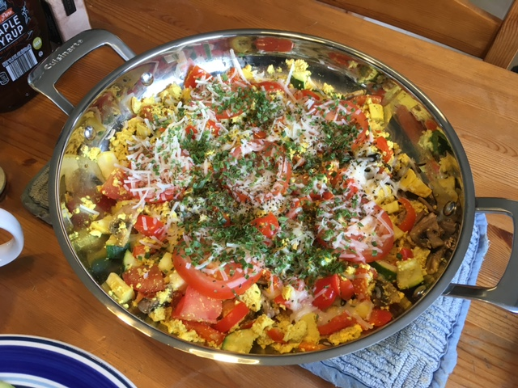

Tofu Scramble

Description
An easy dish if you have a block of tofu and some veggies.
The cheese is optional.
Necessary Ingredients
- 1 block of tofu
- Veggies suitalbe for scrambling
Optional Ingredients
How to Make It
- press excess water out of tofu
- break tofu into chunks
- cut up veggies into bite sized pieces
- heat up a pan and throw your veggies in to slightly soften
- throw in your tofu and seasonings
- stir around as you would like
- let it sit for a bit so extra water can evaporate
- if using cheese, sprinkle on top then cover with lid to help it melt
- it is ready whenever you think it looks good